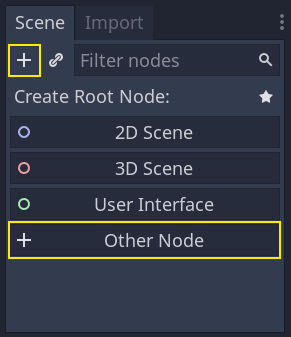

Godot Engine — это бесплатный универсальный кроссплатформенный игровой движок, который упрощает создание 2D - и 3D-игр.
Узлы — это фундаментальные строительные блоки вашей игры. Они подобны ингредиентам в рецепте. Существуют десятки их видов, которые могут отображать изображение, воспроизводить звук, представлять камеру и многое другое.
Все узлы имеют следующие атрибуты:
Последний атрибут является ключевым. Вместе узлы образуют дерево, которое является мощной функцией для организации проектов. Поскольку разные узлы имеют разные функции, их объединение приводит к более комплексному поведению. Как мы уже видели ранее, вы можете создать игрового персонажа, за которым следует камера, используя узел кинематического тела с именем "Персонаж", узел спрайта, узел камеры и узел формы столкновения.
Когда вы организуете узлы в дереве, подобно нашему персонажу, мы называем эту конструкцию сценой. После сохранения сцены работают как новые типы узлов в редакторе, где вы можете добавить их в качестве дочернего элемента существующего узла. В этом случае экземпляр сцены отображается как отдельный узел со скрытыми внутренними элементами.
Сцены позволяют вам структурировать код вашей игры так, как вы этого хотите. Вы можете компоновать узлы для создания произвольных и сложных типов узлов, таких как игровой персонаж, который бегает и прыгает, полоса жизни, сундук, с которым можно взаимодействовать, и многое другое.

По сути, редактор Godot - это редактор сцен. В нем есть множество инструментов для редактирования 2D- и 3D-сцен, а также пользовательских интерфейсов. Проект Godot может содержать столько сцен, сколько вам необходимо. Движку же требуется только одна сцена - главная сцена. Это сцена, которую Godot загрузит первой, когда вы или игрок запустите игру.
Давайте создадим нашу первую сцену с одним узлом. Для этого сначала нужно создать новый проект. После открытия проекта вы должны увидеть пустой редактор.

Мы собираемся добавить в нашу сцену узел Label. Его функция заключается в отрисовке текста на экране.Нажмите "Добавить дочерний узел" или "другой узел" для создания корневого узла.
Откроется диалоговое окно "Create Node" (Создать узел), в котором отобразится длинный список доступных узлов.
Выберите узел Label (Метка). Вы можете ввести его имя, чтобы отфильтровать его по списку.

Следующим шагом будет изменение свойства Label's "Text". Давайте изменим его на "Hello World".Перейдите на вкладку Inspector (справа от окна просмотра). Щелкните внутри поля под свойством Text и введите "Hello World".